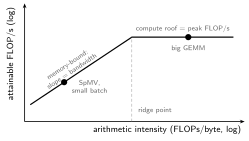
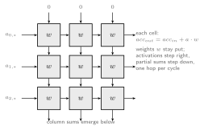

When Dennard scaling ended and multicore’s dividend ran out (History of Computing), the remaining lever for large efficiency gains became specialization: hardware tailored to one domain, traded against generality. Hennessy and Patterson call it a new golden age for architecture, and deep learning is its flagship domain because the workload is enormous, regular, and almost entirely one operation: multiply-accumulate over matrices.
The systems framing is accelerator-level parallelism, the next rung on a familiar ladder:
| Level | Unit of concurrency | Exploited by |
|---|---|---|
| ILP | instructions | superscalar, OOO |
| DLP | data elements | vector, SIMD, GPU |
| TLP | threads | multicore, SMT |
| ALP | whole accelerators | NPU + GPU + ISP + codec, running at once |
A modern phone SoC is mostly accelerator silicon (image signal processor, neural engine, video codec, modem), with the CPU largely orchestrating. The driver is energy: a dedicated engine can be 10-1000x more efficient at its task, and energy is the binding constraint from phones to datacenters.
A DNN forward pass is dominated by dense matrix multiplication (convolutions included, reshaped to GEMM). Whether a kernel can run at a machine’s peak is a single ratio, its arithmetic intensity (FLOPs per byte moved from memory), read off the roofline:

Left of the ridge point, performance is bandwidth × intensity no matter how many FLOPs the chip has; right of it, the compute roof binds. Big-batch GEMM has high intensity (each weight fetched once serves many activations), which is why accelerators want large batches; small-batch inference and sparse operations sit memory-bound on the slope, which is why accelerators ship with HBM and why no amount of extra MACs helps them.
The most important table in accelerator design:
| Operation | Relative energy |
|---|---|
| 8-bit MAC | 1x |
| local register / PE buffer read | ~1x |
| on-chip SRAM read | ~6x |
| off-chip DRAM read | ~200x |
Compute is cheap; moving operands is not. Every structure below (systolic forwarding, dataflow choices, scratchpads, quantization) is an attack on data movement, not on arithmetic count.
A systolic array is a 2D grid of processing elements, each doing one MAC per cycle and passing operands to its neighbors: data pulses through the array with no instruction fetch, decode, or register-file access per operation:

// One PE: a MAC, operands forwarded to neighbors each cycle
always_ff @(posedge clk) begin
acc <= acc + (a_in * w); // local multiply-accumulate
a_out <= a_in; // activation steps east
endThis is the architecture of Google’s TPU: the v1 MXU is a 256×256 grid of 8-bit MACs (65,536 of them, 92 TOPS peak) fed from a 28 MiB on-chip buffer (Jouppi et al., ISCA 2017).
Because of the register-file tax. Feeding one ALU from a register file costs a 1-of- read mux per port, three ports per MAC; for narrow operands, more gates than the multiplier itself (Combinational Circuits puts a multiply at adders). Independent MACs pay that tax per operation. A systolic array pays it once at the boundary: for an array, one trip’s worth of operands crossing the edge ( values) feeds MACs inside, because every value is reused as it hops neighbor to neighbor. Compute scales with the array’s area while boundary traffic scales with its edge: the whole value proposition in one ratio.
The stationary operand loads through a shift chain (one value per column per cycle, cycles and wires to fill an array, never ), a cost paid once per layer and amortized over thousands of input vectors.
Dataflows name what stays put in the PEs, the key mapping choice since movement is the cost:
| Dataflow | Stationary | Best when |
|---|---|---|
| weight-stationary (TPU) | weights | high weight reuse: big batches |
| output-stationary | partial sums | partial-sum traffic dominates |
| row-stationary (Eyeriss) | rows of activations | balancing both, per layer shape |
No dataflow wins everywhere, which is why mappers/compilers pick per layer.
Inference tolerates far more numerical error than training, so accelerators compute narrow:
| Format | Used for | Note |
|---|---|---|
| FP32 | training baseline | precise gradients |
| BF16 / FP16 | mixed-precision training, inference | half the traffic (Floating Point Architecture) |
| INT8 | inference | needs calibration (scale, zero point) |
| FP8 / INT4 | aggressive inference | accuracy validated per model |
Halving precision pays more than double: multiplier area scales with the product of operand widths, so half-width operands mean a quarter the multiplier and four times the MACs in the same silicon, on top of the linear savings in memory traffic. This quadratic reward is the deep reason low-precision arithmetic has been the most reliable win in the field.
Sparsity is the other free lunch: pruned weights and post-ReLU zero activations mean MACs that contribute nothing and can be skipped, with compressed formats saving the traffic too. The catch: unstructured zeros defeat the regular dataflow that makes the array efficient, so hardware-friendly designs force structured sparsity (fixed patterns, e.g. 2-of-4) and accept a lower sparsity ratio for exploitable regularity.
CPUs hide DRAM behind transparent caches; TPU-class accelerators expose a scratchpad that software fills explicitly:
| Cache | Scratchpad | |
|---|---|---|
| what’s on-chip | hardware decides, dynamically | compiler decides, statically |
| latency | hit/miss dependent | deterministic |
| model | ordinary loads/stores | explicit copy-in/copy-out |
Determinism is the point: a compiler that knows every access latency can schedule the array’s feed pipeline exactly full, which is impossible if any access might silently cost 100x on a miss. The price is that software must get residency right: there is no graceful miss path.
Both are MAC farms; they differ in granularity. A GPU tiles many small units (each SM: warp scheduler, register file, a small tensor core; structurally a tiny TPU), keeping wiring short and local but paying control and register-file overhead per unit; SIMT gives it generality across irregular work. A TPU builds a few huge MXUs, amortizing overhead across a giant array but squeezing all traffic through each unit’s perimeter. The same area-versus-boundary trade as inside the systolic array, one level up, and the reason GPUs stay the flexible default while TPU-style chips win big regular GEMMs.
A last engineering distinction: safe optimizations (parallelism, pipelining, buffer sizing) preserve bit-exact outputs and verify like any design in Synthesis, Timing and Power; unsafe ones (quantization, pruning, voltage overscaling) change the numbers and must be re-validated against model accuracy: a chip can pass every hardware test and still silently make the network worse.
Author: Sai Govardhan (saigov14@gmail.com)
Courses
Textbooks
Standards, Papers, and Wikipedia
MIT License
Copyright (c) 2025 Sai Govardhan (saigov14@gmail.com)
Permission is hereby granted, free of charge, to any person obtaining a copy
of this software and associated documentation files (the "Software"), to deal
in the Software without restriction, including without limitation the rights
to use, copy, modify, merge, publish, distribute, sublicense, and/or sell
copies of the Software, and to permit persons to whom the Software is
furnished to do so, subject to the following conditions:
The above copyright notice and this permission notice shall be included in all
copies or substantial portions of the Software.
THE SOFTWARE IS PROVIDED "AS IS", WITHOUT WARRANTY OF ANY KIND, EXPRESS OR
IMPLIED, INCLUDING BUT NOT LIMITED TO THE WARRANTIES OF MERCHANTABILITY,
FITNESS FOR A PARTICULAR PURPOSE AND NONINFRINGEMENT. IN NO EVENT SHALL THE
AUTHORS OR COPYRIGHT HOLDERS BE LIABLE FOR ANY CLAIM, DAMAGES OR OTHER
LIABILITY, WHETHER IN AN ACTION OF CONTRACT, TORT OR OTHERWISE, ARISING FROM,
OUT OF OR IN CONNECTION WITH THE SOFTWARE OR THE USE OR OTHER DEALINGS IN THE
SOFTWARE.